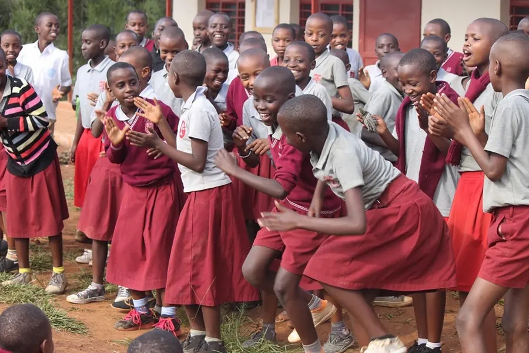

Dance
Traditional Rwandan dance, rehearsed after lessons
Rwandan dance is not something our children learn for visitors. It is how an assembly starts and how every graduation ends. In nursery it begins as clapping games and song — movement is one of the six pre-primary learning areas, not an extra.
From Primary 2 the dance group takes it further: traditional forms rehearsed after lessons and performed at assemblies, at the nursery graduation in caps and gowns, and for partners visiting the school. It is the activity with the largest audience and the lowest barrier to entry — no kit, no fee, no trials.